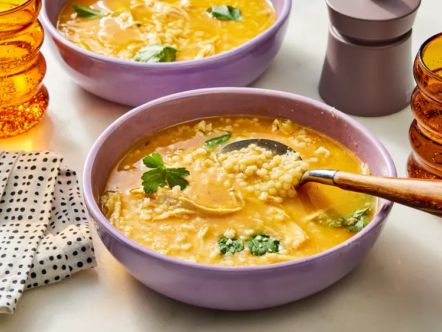

Simple Macaroni and Cheese

Description
Sometimes, the best remedy for a cold—or just a long day—is a steaming bowl of soup. Enter Italian Penicillin Soup, lovingly known as Sick Day Soup or Chicken Pastina Soup. While it might not come with a doctor’s seal of approval, this rich, aromatic dish is the ultimate comfort on a chilly day, offering a perfect blend of tradition and ease.
What sets this apart from standard chicken noodle soup? The simmered vegetables are blended and stirred back into the broth—a “genius” move that adds both body and complexity. Cooking the pastina directly in the broth thickens it just enough, while fresh herbs and a Parmesan rind elevate the flavor to something truly special.
“Honestly, this will be the only way I make chicken noodle soup from now on,” says recipe tester Amanda Holstein. Whether you’re under the weather or just craving something cozy, this hearty soup is destined to become your cold-weather favorite.
Ingredients
- 8 cups lower-sodium chicken broth
- 2 cups chopped sweet onion
- 1 1/2 cups peeled and coarsely chopped carrots
- 2 celery ribs, coarsely chopped
- 6 garlic cloves, smashed and peeled
- 3/4 teaspoon kosher salt
- 4 thyme sprigs
- 2 fresh bay leaves
- 1 (2 ounce) Parmigiano-Reggiano cheese rind, plus grated cheese for garnish
- 4 ounces uncooked pastina pasta
- 2 cups shredded rotisserie chicken
- fresh flat-leaf parsley leaves, for garnish
Directions
- Gather the ingredients..
- Bring broth, onion, carrots, celery, garlic, and salt to a boil in a large saucepan or small Dutch oven over high heat. Reduce heat to medium-low and simmer until vegetables are softened, about 10 minutes. Using a slotted spoon, transfer vegetables and 1 cup cooking liquid to a blender.
- Secure the lid on the blender and remove the center piece to allow steam to escape. Place a clean towel over the opening. Process until smooth, about 30 seconds. Stir blended carrot mixture back into soup.
- Add thyme sprigs, bay leaves, and Parmigiano-Reggiano cheese rind. Bring to a boil over medium-high. Add pasta, reduce heat to medium-low, and simmer, stirring occasionally, until pasta is tender, 18 to 20 minutes, adding in shredded chicken for the last 3 minutes of cooking.
- Remove from heat. Remove and discard thyme sprigs, bay leaves, and Parmigiano-Reggiano cheese rind.
- Serve immediately; garnish with parsley and grated Parmigiano-Reggiano.
Home